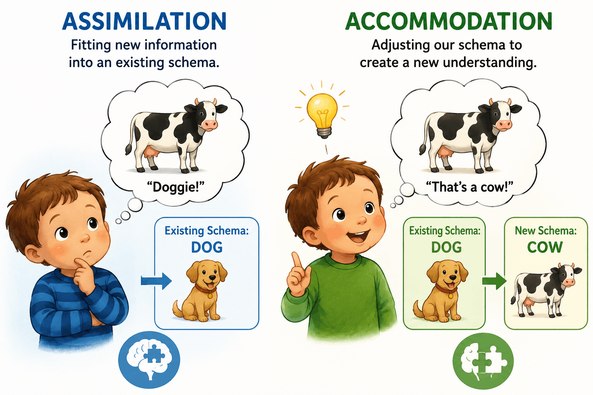

The Big Picture: Why Do We Make Bad Choices?
Your brain is an incredibly powerful supercomputer, but it is also exceptionally lazy. To survive in a complex world, the brain constantly looks for shortcuts to save time and energy. Most of the time, these mental shortcuts allow us to navigate our day seamlessly. But when those shortcuts misfire, they lead to irrational decisions, cognitive biases, and errors in judgment. Let's look at how we build our thoughts, solve problems, and occasionally fall into mental traps.
1.The Building Blocks of Thought
To make sense of the world, we have to organize it. We do this by grouping similar objects, ideas, or events into mental categories called concepts. If I ask you to picture a "bird," you probably won't imagine a penguin or an ostrich; you'll likely picture a robin or a sparrow. That is because the robin is your prototype: the most typical, perfect, or best example of a concept.
As we grow, we build vast mental frameworks called schemas based on our experiences. When we encounter something new, our brain tries to fit it into an existing schema, a process called assimilation. For example, a toddler who has only ever seen dogs might point to a cow and say "Doggie!" because it has four legs and a tail. But eventually, the child learns that cows moo and dogs bark. They must modify their existing schema to create a brand new category for cows. This cognitive adjustment is called accommodation.

2.Problem Solving: The Slow Way vs. The Fast Way
When faced with a problem, our brain's executive functions kick in. These are the higher-level cognitive processes that allow us to generate ideas, organize, plan, and carry out goal-directed behaviors, the same mental toolkit responsible for critical thinking, since evaluating evidence and weighing options well is really just executive functions in action. But how we reach that goal depends on the strategy we choose.
- Algorithms
- These are step-by-step, logical procedures that guarantee a solution if followed correctly. Imagine forgetting the 3-digit combination to your padlock. If you use an algorithm, you will try 0-0-0, then 0-0-1, then 0-0-2, all the way to 9-9-9. You will eventually open the lock, but it will take hours.
- Heuristics
- These are simple, efficient "rules of thumb" or mental shortcuts. Instead of trying every number on the lock, a heuristic approach would be guessing your birthday or your lucky number. Heuristics are incredibly fast, but unlike algorithms, they do not guarantee a correct answer.
3.When Shortcuts Betray Us (Cognitive Biases)
Because we rely so heavily on heuristics, we are vulnerable to predictable errors in judgment:
- Availability Heuristic
- Estimating the likelihood of an event based on how easily a vivid example comes to mind. People are often terrified of shark attacks but don't think twice about driving on the highway, simply because shark attacks are vividly covered in the news, making them easily "available" in memory.
- Representativeness Heuristic
- Judging a situation based on how well it matches your prototype or stereotypes. If you see a person who is quiet, loves reading, and wears glasses, you might assume they are a librarian rather than a salesperson, because they match your prototype of a librarian.
- Gambler’s Fallacy
- The mistaken belief that past random events influence future independent events. If a coin lands on heads five times in a row, someone might bet heavily on tails, thinking it is "due." In reality, the odds are still 50/50.
- Sunk-Cost Fallacy
- The tendency to continue an endeavor because you have already invested time or money into it, even when the future costs outweigh the benefits. (e.g., Staying in a movie theater to watch a terrible movie just because you paid $15 for the ticket).
4.Thinking Outside the Box (and What Traps Us)
Creativity is the ability to produce original and valuable ideas. It requires divergent thinking: exploring many different possible solutions to a problem (like brainstorming 50 different uses for a brick). Schools, however, often test convergent thinking, which demands narrowing down possibilities to find the single correct answer (like a multiple-choice test).
Our ability to solve problems creatively is often hindered by two major mental roadblocks:
- Mental Set
- The tendency to approach a problem using the exact same strategy that worked in the past, even if it isn't helpful for the current situation.
- Functional Fixedness
- A cognitive bias that limits a person to using an object only in its traditional way. If you need to tighten a screw but don't have a screwdriver, functional fixedness might prevent you from realizing that the dime in your pocket would work perfectly!
5.The Invisible Hands of Context
Finally, our decisions are constantly being manipulated by external circumstances we aren't even aware of:
- Priming
- The unconscious activation of specific associations in memory. If you walk past a bakery smelling fresh bread, you might be more likely to buy a dessert at the restaurant next door without realizing why.
- Framing
- How information is presented significantly impacts our decisions. A surgeon telling a patient a procedure has a "90% survival rate" sounds much more appealing than saying it has a "10% mortality rate," even though the underlying data is identical.
6.Don't Trip Up! (Common Misconceptions)
⚠️ Assimilation vs. Accommodation: Think of the "ss" in assimilation as meaning "Same Schema." Think of the "cc" in accommodation as meaning "Change Concept" or "Create Category!"
⚠️ Availability vs. Representativeness Heuristic: Availability is about Memory: did you just see a vivid news story about a plane crash? Representativeness is about Stereotypes: does this person match my mental prototype of a librarian?
7.Key Terms in This Topic
8.Practice This Topic
Test yourself on exactly what you just read. The numbers on each button show how much material is waiting for you.
The same self-check questions that close your guided notes. Find out whether heuristics and biases stuck.
Start Quick Check →Flip through the key terms from this topic, including the availability and representativeness heuristics.
Open the deck →AP-style multiple choice on concepts, problem solving, heuristics, and decision-making, with an explanation after every answer.
Take the quiz →